고양이 그림이 맘에안드네 어쩌네 하고선
결국 질렀다 ㅡㅡ;;
평소에 그냥저냥 잘 넘어가다
가끔씩 이렇게 '나 요즘 왜이래;; 미친거아냐;;' 싶은 의욕충만함을 보일때가 있는데
요즘이 그러함;;; 크헝;;
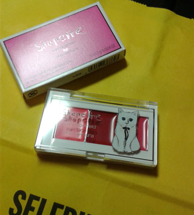
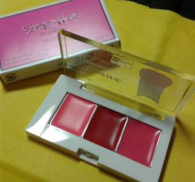
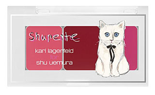
Shu uemura
슈페트 립트리오
내가찍은 사진은 참으로 의미없으니
잘나온 사진으로^^;;
난 그냥 1번 / 2번으로 알고있었는데
웹사이트 가보니 나름 이름이 있네
내가 구입한건 02. Tokyo Kawaii ㅋㅋ
색은 이미 갖고있는 안나수이 립팔레트랑 비슷한거 같기도하고
바르는것도 안나수이가 더 맘에드는것 같기도 하고
그걸 다 떠나서 걍 쪼매난게 귀여워서 갖고싶었어요;;
어짜피 지를거(......;;) 더 고민안하고 지를련다~ 이러고 충동구매^^;;
그리고 월요일
10월달에 도전해본 (한국)디자인 공모전 결과가 나왔다
엄훠!! 나 일등!! 우왕 신기!!
여러분~저 일등 했어욤
동네방네 자랑중^^
상금 백만원!! +_+
↓
우왕!! 자축해야지!! 아싸~지르자!!
이러고 퇴근후 셀프리지 달려감 ㅋㅋㅋㅋ
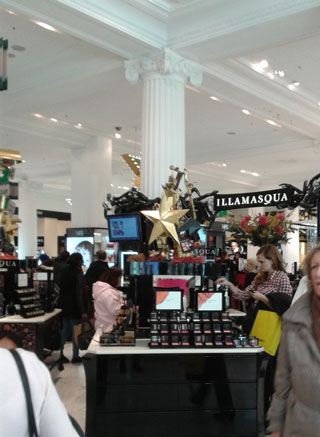
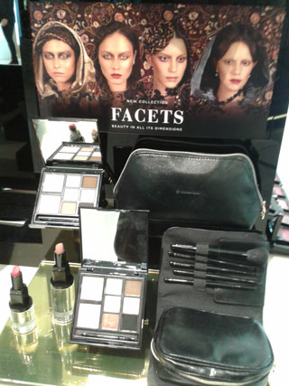
요즘 늠 맘에든 일라마스카 +_+
안나수이가 고스로리 라면
여긴 걍 귀신의 집 ㅋㅋㅋㅋ
첨에 연극무대 분장으로 출발했다는데 맞나?
매장 디스플레이도 기괴하고 화보도 굉장히 과한게 많아
구경하는 재미가 있당 :)
매장서 우연히 블러셔 함 문질문질 해봤다가
그 질감(?>이 느므느므 맘에드는거라 ;ㅂ;
손등에 문지르면 촥 달라붙는 느낌이
매번 갈때마다 블러셔 문질거리고 돌아옴 ㅋㅋㅋㅋㅋ
개인적으로 나스블러셔 보다 이게 더 내 취향 ;ㅂ;
하지만 집에 블러셔는 이미 많이 있고;;
해서 고민하던 찰나 아항항 이럴때 앞뒤안재고 사고싶은거 질러야지~
싶어 냅다 데려옴 ^^;;;
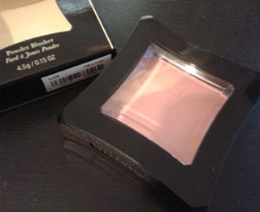
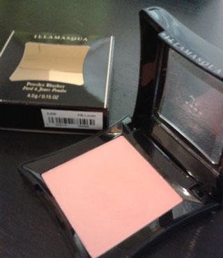
구입한건 Lover
그외 Beg / Excite / Tweak / Naked Rose 일케 색 맘에든다 ;ㅂ;
테스트는 Lover 랑 Excite 두개 해봤는데
Excite가 좀더 볼드하다고 설명해주심
젤 처음 맘에든 색으로 결정했다 :)
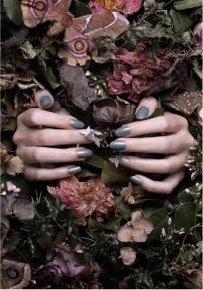
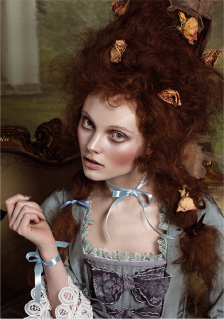
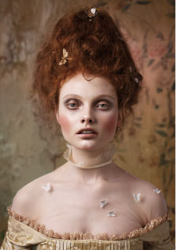
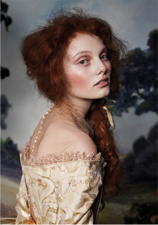
일라마스카 컬렉션 Once
크흑 이 사진 다 맘에들어 ;ㅂ;
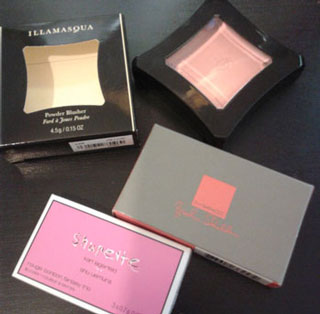
11월의 포풍지름 ㅡㅡ;
제가 원래 이런사람이 아닌데 말이죠;;;
+
상자각 고이모셔둠;; 어짜피 며칠있다 버릴건데
바로 쓰레기통으로 직행하면 안될거 같아서(←왜;;)
하지만 이 와중에
12월 크리스마스 직전 해롯 화장품 세일이랑
12월말 한국갈때 면세 / 한국에서 뭘 살까를 고민중인 인간;;
화장을 한다기 보다 특이한 컨셉이나 케이스(....)가 맘에들면
사버려요;;; OTL;;;;
다 쓰지 못하는데;ㅂ; 라고 걱정하면서도
갖고싶은건 꾸역꾸역 사게되는군욤;;
그리고 이런 사이클을 제일 좋아하는게 울 엄마님 ㅋㅋㅋ
한국갈때마다 내가 호기심에 사놓고 고대로 모셔둔걸
왕창왕창 가져다 드림ㅋㅋㅋ
빵끗 웃으시며 자주오라고 꼬신다 ㅋㅋㅋㅋ
세상은 넓고 이쁜건 참으로 많아용 ㅜㅜ
+
좋은소식 하나더 :)
전에 Aldo box에 그림그린거에 이어 두번째
Kuma에 대해 포스팅해준 Christianne Cruz양에게 캄샤를
Kuma 인스타그램 / 주로 제가 어딜 쏘다니는지 알수있습니다 ^^;;;
Kuma Couture 포스팅은 여기!!